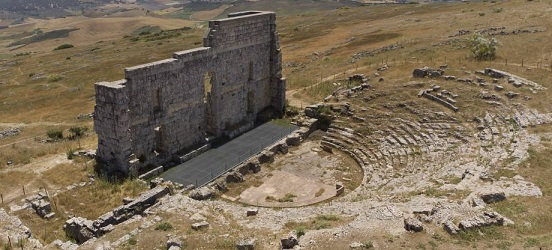
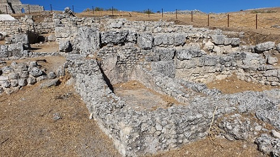
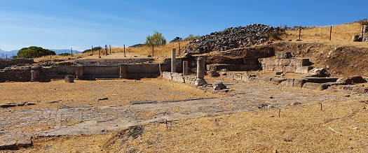
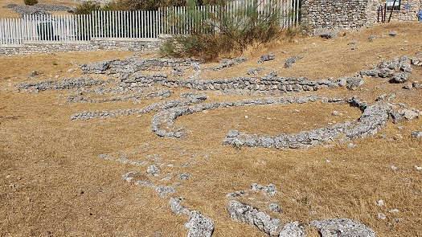

Ronda-Acinipo
Las excavaciones
arqueológicas indican que la mesa fue ocupada por primera vez en la Edad
del Cobre. A finales del siglo VII a.e.c. es abandonada para volver a
ocuparse a lo largo del siglo V a.e.c.
Tuvo su esplendor en época romana, conllevó grandes cambios, como la
construcción de edificios monumentales y la acuñación de moneda propia,
dando lugar al auge de la ciudad romana de Acinipo, convertida en
municipio romano, en los siglos siguientes.
Destaca por su impresionante teatro, construido posiblemente a mitad del
siglo I a.e.c. uno de los más antiguos y singulares de la antigua
Hispania romana.
El yacimiento arqueológico de Acinipo, está situado a 20 km. del casco urbano de Ronda. Asentada sobre un antiguo "oppidum" ibérico. Se conserva el teatro, cuyo graderío está excavado en la roca, la domus y las termas. La ciudad estaba dotada de muralla. Tuvo su máximo esplendor en el siglo I. En el siglo III decae y es en el siglo IV es cuando la mayoría de la población existente se pasa al municipio de Arunda, la actual Ronda. Según las últimas investigaciones y el hallazgo en el yacimiento de restos cerámicos la ciudad pudo quedar deshabitada no antes del siglo VII.
|
 Ver: Teatros romanos |
 |
|
 Domus escalonada |
 Termas romanas |
Junto a la entrada de la ciudad, se pueden ver los restos de viviendas, las cabañas de la Edad del Hierro.

También destaca el acueducto de la Fuente de la Arena o Hierbabuena.
A 10km de Acinipo se encuentra Bodegas Morosanto, en época romana una villa rustica, dedicada ya a la explotación vitivinícola. Se pueden ver los vestigios de una villa romana, habitada entre los siglos I y VI.
| MÁLAGA ROMANA | MENÚ | HISPANIA ROMANA |